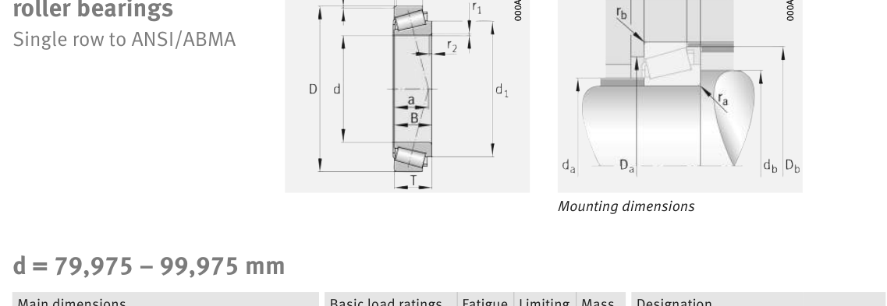

Original catalogue drawing - FAG Schaeffler HR 1, page 626

Scanned from the manufacturer catalogue page listing this part number. All part numbers printed on that table share the same drawing.
Scale cross-section
Blue = inner / outer ring, yellow = rolling element. Drawn to scale from this part's own
dimensions for selection reference only - not a manufacturing or assembly drawing.
Dimension table (mm / inch)
Symbol
Dimension
mm
inch
d
Bore diameter
90
3.5433
D
Outside diameter
145
5.7087
B
Inner-ring / bearing width
34
1.3386
T
Overall assembly width
35
1.378
C
Cup / outer-ring width
27
1.063
Notes
Weights are given in kg. Load ratings are shown in both the original catalogue units and the converted value (1 N = 0.2248 lbf). Data is provided for selection reference only - confirm against the latest official catalogue before ordering.
Main dimensions
Bore d (mm)
90
Outside dia. D (mm)
145
Width B (mm)
34
Overall width T (mm)
35
Cup width C (mm)
27
Inner-ring OD d1 (mm)
118.5
Load ratings & speeds
Basic dynamic load rating Cr (lbs)
39791
Basic static load rating Cor (lbs)
59574
Basic dynamic load rating Cr (N)
177000
Basic static load rating C0r (N)
265000
Basic dynamic axial rating Ca (N)
4
Fatigue limit load Cur (N)
32000
Factor e
0.44
Factor Y
1.35
Factor Y0
0.74
Limiting speed nG (rpm)
4,700
Effective load centre a (mm)
33
Weight
Weight (kg)
2.15
Mounting dimensions (fillets / shoulders)
Chamfer r2 min (mm)
6
Shaft shoulder da (mm)
99
Shaft shoulder db (mm)
111
Housing shoulder Da (mm)
131
Housing shoulder Db (mm)
139
Housing fillet ra max (mm)
6
Fillet rb max (mm)
2.5
Bearing life (ISO 281 basic rating life)
C / P
Equivalent load P (N)
L10 (106 rev)
L10h at 1,500 rpm
4
44,250
102
1,129
6
29,500
392
4,361
8
22,125
1,024
11,378
10
17,700
2,154
23,938
15
11,800
8,323
92,483
Basic rating life per ISO 281: L10 = (C/P)10/3 with C = 177,000 N. Hours = L10 x 106 / (60n). Life-modification factors for lubrication, contamination and temperature (aISO) are not included.
Source & traceability
Brand
FAG
Source catalogue
FAG / Schaeffler Rolling Bearings HR 1
Catalogue page
p.626 (dimensions)
Load ratings in newtons, fatigue limit load Cur, limiting speed nG and reference speed nB.
Send us the quantity you need and we will come back with price and
lead time, normally within 24 hours. Equivalent parts from other brands can be quoted at the same time.